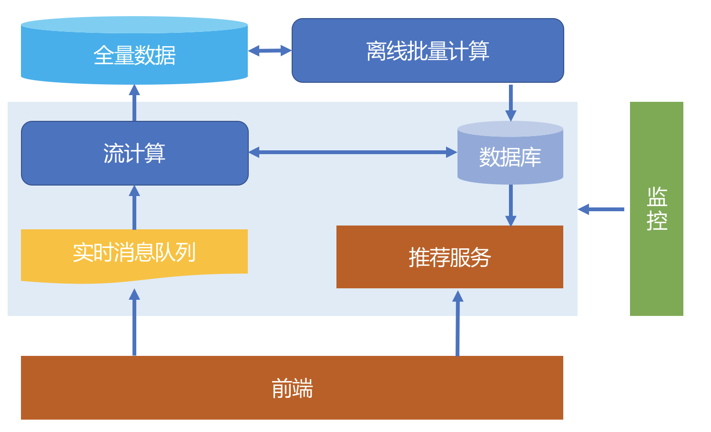
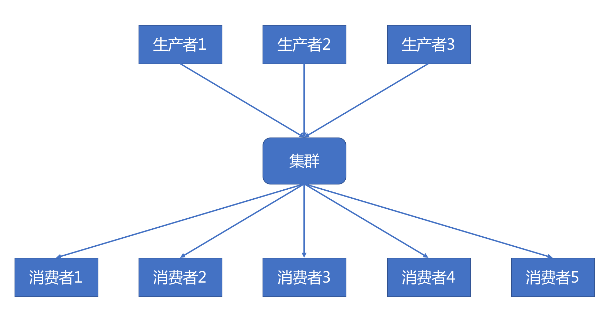
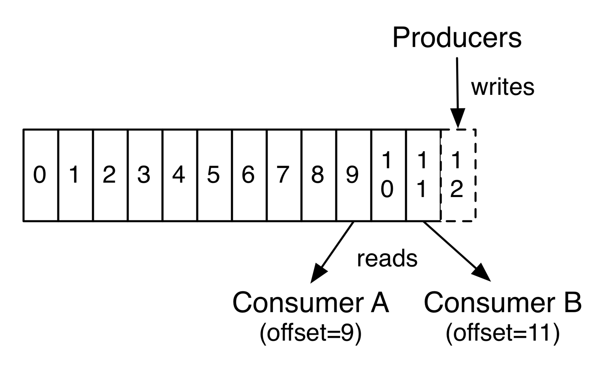
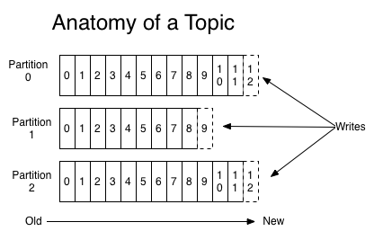
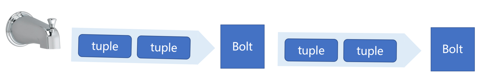
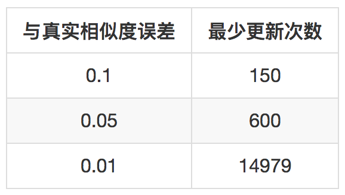

- 00 开篇词 用知识去对抗技术不平等.md.html
- 01 你真的需要个性化推荐系统吗_.md.html
- 02 个性化推荐系统有哪些绕不开的经典问题？.md.html
- 03 这些你必须应该具备的思维模式.md.html
- 04 画鬼容易画人难：用户画像的“能”和“不能”.md.html
- 05 从文本到用户画像有多远.md.html
- 06 超越标签的内容推荐系统.md.html
- 07 人以群分，你是什么人就看到什么世界.md.html
- 08 解密“看了又看”和“买了又买”.md.html
- 09 协同过滤中的相似度计算方法有哪些.md.html
- 10 那些在Netflix Prize中大放异彩的推荐算法.md.html
- 11 Facebook是怎么为十亿人互相推荐好友的.md.html
- 12 如果关注排序效果，那么这个模型可以帮到你.md.html
- 13 经典模型融合办法：线性模型和树模型的组合拳.md.html
- 14 一网打尽协同过滤、矩阵分解和线性模型.md.html
- 15 深度和宽度兼具的融合模型 Wide and Deep.md.html
- 16 简单却有效的Bandit算法.md.html
- 17 结合上下文信息的Bandit算法.md.html
- 18 如何将Bandit算法与协同过滤结合使用.md.html
- 19 深度学习在推荐系统中的应用有哪些_.md.html
- 20 用RNN构建个性化音乐播单.md.html
- 21 构建一个科学的排行榜体系.md.html
- 22 实用的加权采样算法.md.html
- 23 推荐候选池的去重策略.md.html
- 24 典型的信息流架构是什么样的.md.html
- 25 Netflix个性化推荐架构.md.html
- 26 总览推荐架构和搜索、广告的关系.md.html
- 27 巧妇难为无米之炊：数据采集关键要素.md.html
- 28 让你的推荐系统反应更快：实时推荐.md.html
- 29 让数据驱动落地，你需要一个实验平台.md.html
- 30 推荐系统服务化、存储选型及API设计.md.html
- 31 推荐系统的测试方法及常用指标介绍.md.html
- 32 道高一尺魔高一丈：推荐系统的攻防.md.html
- 33 和推荐系统有关的开源工具及框架介绍.md.html
- 34 推荐系统在互联网产品商业链条中的地位.md.html
- 35 说说信息流的前世今生.md.html
- 36 组建推荐团队及工程师的学习路径.md.html
- 加餐 推荐系统的参考阅读.md.html
- 结束语 遇“荐”之后，江湖再见.md.html
- 捐赠
28 让你的推荐系统反应更快：实时推荐
更快，更高，更强，不只是奥林匹克运动所追求的，也是推荐系统从业者所追求的三个要素：捕捉兴趣要更快，指标要更高，系统要更健壮。
我今天就要说的就是这个“更快”。推荐系统是为了在用户和物品之间建立连接，手段是利用已有的用户物品之间的连接，然而任何事物都是有生命周期的，包括这里说的这个虚无的“连接”也是有的。
为什么要实时
一个连接从建立开始，其连接的强度就开始衰减，直到最后，可能用户不记得自己和那个物品曾经交汇过眼神。因此，推荐系统既然使用已有的连接去预测未来的连接，那么追求“更快”就成了理所当然的事情。
用户和物品之间产生的连接，不论轻如点击，还是重如购买，都有推荐的黄金时间。在这个黄金时间，捕捉到用户的兴趣并且给与响应，可能就更容易留住用户。
在业界，大家为了高大上，不会说“更快”的推荐系统，而是会说“实时”推荐系统。实际上，绝对的实时是不存在的，哪怕延迟级别在微秒的推荐，也是会有延迟的。但是为了顺应时代潮流，我还是会在后面的内容中说这是实时推荐，你就那么一听，知道就好。
关于到底什么是实时推荐，实际上有三个层次。
第一层，“给得及时”，也就是服务的实时响应。这个是最基本的要求，一旦一个推荐系统上线后，在互联网的场景下，没有让用户等个一天一夜的情况，基本上最慢的服务接口整个下来响应时间也超过秒级。达到第一层不能成为实时推荐，但是没达到就是不合格。
第二层，“用得及时”，就是特征的实时更新。例如用户刚刚购买了一个新的商品，这个行为事件，立即更新到用户历史行为中，参与到下一次协同过滤推荐结果的召回中。做到这个层次，已经有实时推荐的意思了，常见的效果就是在经过几轮交互之后，用户的首页推荐会有所变化。这一层次的操作影响范围只是当前用户。
第三层，“改得及时”，就是模型的实时更新。还是刚才这个例子，用户刚刚购买了一个新的商品，那需要实时地去更新这个商品和所有该用户购买的其他商品之间的相似度，因为这些商品对应的共同购买用户数增加了，商品相似度就是一种推荐模型，所以它的改变影响的是全局推荐。
实时推荐
好，下面就讲一下如何构建一个处在第三层次的实时推荐系统。
1.架构概览
按照前面的分析，一个处在第三层次的实时推荐，需要满足三个条件：
- 数据实时进来
- 数据实时计算
- 结果实时更新
为此，下面给出一个基本的实时推荐框图。

整体介绍一下这个图，前端服务负责和用户之间直接交互，不论是采集用户行为数据，还是给出推荐服务返回结果。
用户行为数据经过实时的消息队列发布，然后由一个流计算平台消费这些实时数据，一方面清洗后直接入库，另一方面就是参与到实时推荐中，并将实时计算的结果更新到推荐数据库，供推荐服务实时使用。
2.实时数据
实时流数据的接入，在上一篇专栏中已经讲到过，需要一个实时的消息队列，开源解决方案Kafka已经是非常成熟的选项。

Kafka以生产者消费者的模式吞吐数据，这些数据以主题的方式组织在一起，每一个主题的数据会被分为多块，消费者各自去消费，互不影响，Kafka也不会因为某个消费者消费了而删除数据。
每一个消费者各自保存状态信息：所消费数据在Kafka某个主题某个分块下的偏移位置。也因此任意时刻、任意消费者，只要自己愿意，可以从Kafka任意位置开始消费数据，一遍消费，对应的偏移量顺序往前移动。示意图如下。

一个生产者可以看做一个数据源，生产者决定数据源放进哪个主题中，甚至通过一些算法决定数据如何落进哪个分块里。示意图如下：

因此，Kafka的生产者和消费者在自己的项目中实现时都非常简单，就是往某个主题写数据，以及从某个主题读数据。
3.流计算
整个实时推荐建立在流计算平台上。常见的流计算平台有Twitter开源的Storm，“Yahoo！”开源的S4，还有Spark中的Streaming。
不过随着Storm使用者越来越多，社区越来越繁荣，并且相比Streaming的MiniBatch模式，Storm才是真正的流计算。因此，在你构建自己的实时推荐时，流计算平台不妨就选用Storm，不过最新的流计算框架FLink表现强劲，高吞吐低延迟，如果你所在团队有人愿意尝试一下也很不错。
Storm是一个流计算框架，它有以下几个元素。
- Spout，意思是喷嘴，水龙头，接入一个数据流，然后以喷嘴的形式把数据喷洒出去。
- Bolt，意思是螺栓，像是两段水管的连接处，两端可以接入喷嘴，也可以接入另一个螺栓，数据流就进入了下一个处理环节。
- Tuple，意思是元组，就是流在水管中的水。
- Topology，意思是拓扑结构，螺栓和喷嘴，以及之间的数据水管，一起组成了一个有向无环图，这就是一个拓扑结构。
注意，Storm规定了这些基本的元素，也是你在Storm平台上编程时需要实现的，但不用关心水管在哪，水管由Storm提供，你只用实现自己需要的水龙头和水管连接的螺栓即可。
因此，其编程模型也非常简单。举一个简单的例子，看看如何用Storm实现流计算？假如有一个字符串构成的数据流，这个数据流恰好也是Kafka中的一个主题，正在源源不断地在接入。
要用Storm实现一个流计算统计每一个字符的频率。你首先需要实现一个Spout，也就是给数据流加装一个水龙头，这个水龙头那一端就是一个Kafka的消费者，从Kafka中不断取出字符串数据，这头就喷出来，然后再实现Bolt，也就是螺栓。
当有字符串数据流进来时，把他们拆成不同的字符，并以（字符，1）这样的方式变成新的数据流发射出去，最后就是去把相同字符的数据流聚合起来，相加就得到了字符的频率。
实际上，如果你知道MapReduce过程的话，你会发现虽然Storm重新取了名字，仍然可以按照MapReduce来理解。
Storm的模型示意如下：

Storm中要运行实时推荐系统的所有计算和统计任务，比如有下面几种：
- 清洗数据；
- 合并用户的历史行为；
- 重新更新物品相似度；
- 在线更新机器学习模型；
- 更新推荐结果。
4.算法实时化
我在前面的文章里面，已经介绍过基于物品的协同过滤原理。下面我以基于物品的协同过滤算法为主线，来讲解一下如何实现实时推荐，其他算法你可以举一反三改造。
主要是两个计算，第一个是计算物品之间的相似度。
\[sim(i, j) = \\frac{co_users(item_{i}, item_{j})}{\\sqrt{count_users(item_{i})}\\sqrt{count_users(item_{j})}}\]
计算了物品和物品之间的相似度之后，用另一个公式来计算推荐分数：
\[rec(u,i) = \\frac{\\sum_{j\\in N_{i}}{sim(i,j)r_{uj}}}{\\sum_{j\\in N_{i}}{sim(i,j)}}\]
要做到前面说的第三层次实时推荐，首先就是要做到增量更新物品之间的相似度。相似度计算分成三部分：
- 分子上的“物品对”，共同评分用户数；
- 分母上左边是物品i的评价用户数；
- 分母上右边是物品j的评价用户数。
所以更新计算相似度就要更新三部分，实际上一种相似度增量更新策略是在收到一条用户评分事件数据时，然后取出这个用户的历史评分物品列表，因为所有的历史评分物品现在和这个新评分物品之间，就要增加一个共同评分了。
并且，这个新物品本身，也要给自己一个评分用户数。更新完三个后，就实时更新所有这些“物品对”的相似度了。
转换成Storm的编程模型，你需要实现：
- Spout：消费实时消息队列中的用户评分事件数据，并发射成（UserID , ItemID_i）这样的Tuple
- Bolt1：接的是源头Spout，输入了UserID和ItemID_i，读出用户历史评分Item列表，遍历这些ItemID_j，逐一发射成((Item_i, Item_j), 1)和((Item_j, Item_i), 1)，并将Item_i加进历史评分列表中；
- Bolt2：接的是源头Spout，输入了UserID和ItemID_i，发射成(ItemID_i, 1)；
- Bolt3：接Bolt1，更新相似度所需的分子
- Bolt4：接Bolt2，更新物品自己的评分用户数
把这个过程表示成公式就是：
\[sim(i, j) = \\frac{co_users(item_{i}, item_{j}) + \\Delta co_users}{\\sqrt{count_users(item_{i}) + \\Delta count_users(i)}\\sqrt{count_users(item_j)) + \\Delta count_users(j)}}\]
另外，还有实时更新推荐结果，也是作为Storm的一个Bolt存在，接到用户行为数据，重新更新推荐结果，写回推荐结果数据中。
5.效率提升
上面展示了一个基于物品的协同过滤算法在实时推荐中的计算过程，那么随之而来的一些问题也需要解决。比如当用户历史行为数据有很多时，或者物品对是热门物品时，相似度实时更新就有些挑战了。对此可以有如下应对办法：剪枝，加窗，采样，缓存。
所谓剪枝就是，并不是需要对每一个“物品对”都做增量计算，为什么呢？
你想一想，两个物品之间的相似度，每更新一次得到的新相似度，可以看成一个随机变量，那么这个随机变量就有一个期望值，一旦物品之间的相似度可以以较高的置信度确认，它已经在期望值附近小幅度波动了，也就没必要再去更新了。
甚至如果进一步确定是一个比较小的相似度，或者可以直接干掉这个物品对，不被更新，也不参与计算。
那么问题就来了，怎么确定什么时候可以不再更新这个物品对的相似度了呢？这时候要用到一个不等式：Hoeffding不等式。
Hoeffding不等式适用于有界的随机变量。相似度明显是有界的，最大值是1，最小值是0。所以可以用这个不等式，Hoeffding不等式是这样一个统计法则：随机变量的真实期望值不会超过 \(\\hat{x} + \\epsilon\) 的概率是概率 1- \(\\delta\)，其中 \(\\epsilon\) 的值是这样算的：
\[\\epsilon = \\sqrt{\\frac{ln(\\frac{1}{\\delta})}{2n}}\]
公式中：\(\\hat{x}\) 是历次更新得到的相似度平均值，n是更新过的次数。这样一来，你选定 \(\\delta\) 和 \(\\epsilon\) 之后就知道更新多少次之后就可以放心大胆地使用了。
例如，下面这个表格是举的几个例子，这里设置 \(\\delta = 0.05\)。

也就是在前面讲到的更新相似度的Bolt中，如果发现一个物品对的更新次数已经达到最少更新次数，则可以不再更新，并且，如果此时相似度小于设定阈值，就可以斩钉截铁地说：这两个物品不相似，以后不用再参与推荐计算了。
这就是一项基于统计的剪枝方法，除此之外还有加窗、采样、合并三种常规办法。
首先，关于加窗。当我说，用户的兴趣会衰减，请你不要怀疑这一点，因为这是这篇文章的基本假设和出发点。
用户兴趣衰减，那么一个直接的推论就是，比较久远的用户历史行为数据所起的作用应该小一些。
所以，另一个剪枝技术就是：滑窗。设定一个时间窗口，时间窗口内的历史行为数据参与实时计算，窗口外的不再参与实时计算。这个窗口有两种办法：
- 最近K次会话。用户如果反复来访问产品，每次访问是一次会话，那么实时计算时只保留最近K次会话信息。
- 最近K条行为记录。不管访问多少次，只保留最近K条历史行为事件，参与到实时推荐中。
两种滑窗方法都可以有效保证实时计算的效率，同时不会明显降低推荐效果。
关于采样。当你的推荐系统遇到热门的物品或者异常活跃的用户，或者有时候就只是突然一个热点爆发了。
它们会在短时间产生大量的数据，除了前面的剪枝方法，还可以对这种短时间大量出现的数据采样，采样手段有很多，可以均匀采样，也可以加权采样，这在前面的专栏里已经详细介绍过方法。
关于合并计算。在前面介绍的增量计算中，是假设收到每一个用户行为事件时都要去更新相似度和推荐结果，如果在突然大量涌入行为数据时，可以不必每一条来了都去更新，而是可以在数据流的上游做一定的合并。
相似度计算公式的分子分母两部分都可以这样做，等合并若干事件数据之后，再送入下游去更新相似度和推荐结果。
最后，提高实时推荐的效率，甚至不只是推荐系统，在任何互联网应用的后端，缓存都是提高效率必不可少的部分。可以根据实际情况，对于高频访问的物品或者用户增加缓存，这可能包括：
- 活跃用户的历史行为数据；
- 热门物品的特征数据；
- 热门物品的相似物品列表。
缓存系统一般采用Memcached或者Redis集群。缓存有个问题就是，数据的一致性可能比较难保证，毕竟它和真正的业务数据库之间要保持时时刻刻同步也是一项挑战。
好了，上面讲到的这些实时推荐有关的优化技巧，其实都是为了满足第三层次的实时推荐要求。
实时更新的推荐结果同步到推荐服务所依赖的线上数据库，这个线上数据库还要定期被线下离线批量的推荐结果所替代。这样一来，实时推荐和离线批量之间就形成了互为补充的作用，这个模式也就是大数据架构最常见的Lambda架构。
总结
今天以协同过滤为例讲到了如何构建一个实时推荐，实际上，并不是每一种推荐算法都适合做实时推荐的，或者没必要。
幸运的是，很多机器学习算法，都可以使用一些在线学习方法更新模型，这些在线学习算法非常适合作为流计算的任务运行，属于我说的第三层次实时推荐。
另外还有一种算法天然就适合在线实时进行，那就是前面讲到的Bandit算法，通过和用户之间反复互动更新推荐。
实时推荐有三个层次，很多非工程师的朋友们常常脑海里想象的实时推荐实际上只是第二层次，也就是实时更新特征，并没实时更新模型，虽然两者的结果看上去都是推荐结果实时更新了，但是意义不同，难度不同，效果也不同。
今天的话题就聊到这里，留给你一个小小的问题，你能说一说你觉得哪些推荐策略不适合放在实时推荐中吗？欢迎留言一起讨论。
© 2019 - 2023 Liangliang Lee. Powered by gin and hexo-theme-book.